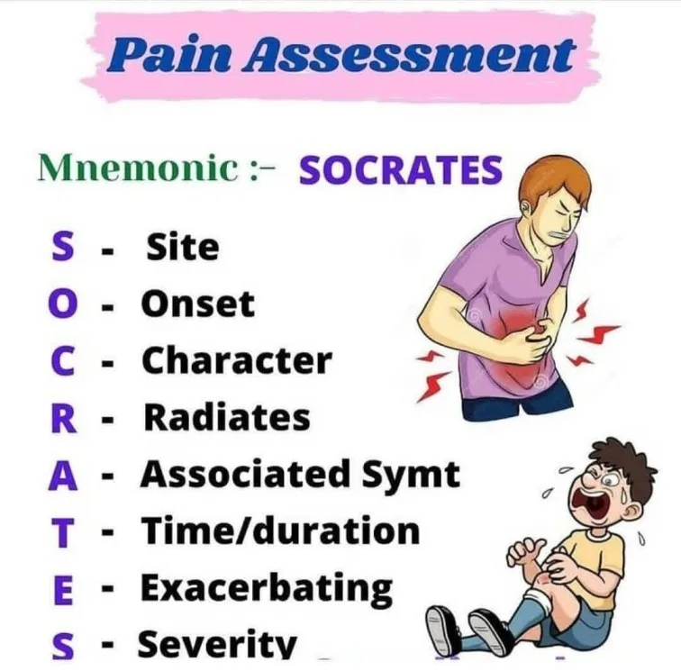
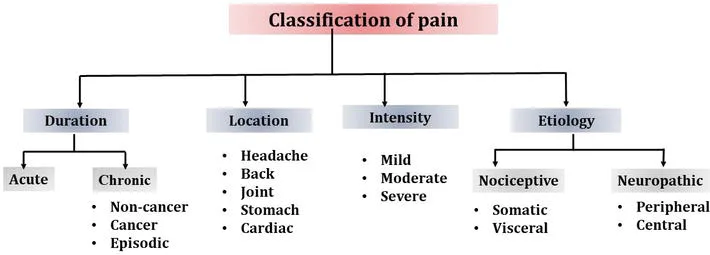

Expanded Nursing Uganda Explanation
Pain Assessment should be understood beyond a short definition. Link the concept to patient history, focused assessment, common risks, nursing priorities, documentation and evaluation of outcomes.
01 Assessment OF Pain
Assessment Introduction .
To effectively manage pain, it is important to begin with a thorough assessment. This includes conducting a comprehensive physical examination and considering other factors that may influence the pain, such as psychological, social, cultural, and spiritual aspects. We covered Pain already, incase you want to view Pain Introduction, Click Here.
Here are some key points to keep in mind during the pain assessment process:
Physical Assessment: Perform a detailed physical examination and document the findings in writing and on a body chart. Limit further investigations to those that will significantly impact treatment decisions. Also, evaluate the extent of the patient’s disease.
Assessment of Influencing Factors : In addition to the physical assessment, assess other factors that may contribute to the pain experience, such as psychological, social, cultural, and spiritual aspects.
Specific Questions to Ask: To gather important information about the pain, ask specific questions, including:
- Onset of Pain : When did the pain start?
- Nature of Pain : What does the pain feel like?
- Site and Radiation of Pain : Where is the pain located and does it spread to other areas?
- Type of Pain : What type of pain is it?
- Duration of Pain and Changes : How long has the pain been present and has it changed over time?
- Precipitating/Aggravating or Relieving Factors : What triggers or worsens the pain? Are there any factors that provide relief? Also, consider how the pain affects the patient’s functional ability, mood, and sleep.
- Effect of Previous Medications : Assess the effectiveness and any side effects of previous pain medications.
- Meaning of Pain to the Patient : Understand the patient’s perspective on the pain and its significance , especially if it relates to their deterioration or end-of-life concerns.
02 PQRST Pain Assessment
- Precipitating and relieving factors : What makes your pain better or worse?
- Quality of pain : How would you describe your pain? What does it feel like?
- Radiation of pain : Does the pain stay in one place or move around your body?
- Site and severity of pain : Where is your pain? (Use a body chart) How bad is it? (Use a pain rating scale)
- Timing and previous treatment for pain : How often do you experience the pain? Does it occur at specific times? Have you received any previous pain treatments?
PQRST Pain Assessment
- PQRST Questions
- P – Position – Where is the pain? – Can you point to where the pain is? – Does the pain spread? – Put an X where it hurts the most.
- P – Precipitating Factors – Does anything worsen the pain, such as eating, bowel movements, or movement in general? – Does anything alleviate or improve the pain? – Does the pain get better when staying still? – Does it improve after having a bowel movement? – Does it improve after wound discharge? – Does using hot or cold compresses help? – Does praying or being with friends provide relief? – Have you tried any medications, painkillers, or herbs? Do they help? – Did any treatment reduce or eliminate the pain?
- Q – Quality – What does the pain feel like to you? – How would you describe your pain using words like nociceptive, somatic pain, etc.?
- R – Radiation – Where does the pain start? – Does the pain radiate to any other areas?
- S – Severity – On a scale of 0 to 5, how severe is the pain? – How does the pain affect your daily life? – Does it prevent you from engaging in normal activities, sleeping, moving, sitting, or eating?
- T – Timing – How long have you had the pain? – Is the pain constant or does it come and go? – Does the pain worsen at a specific time of day or night?
- Meaning of Pain, this is to help to understand the patient’s thinking about the pain. – What are your fears about the pain? – What do you think is causing the pain? – What does the pain mean to you? Some possible answers: “I’m being punished,” “I’m going to die,” “There is no hope,” “I have to suffer; it is my destiny,” “I’m being eaten away.”
In a PQRST pain assessment, these questions help gather important information about the pain, its location, factors that worsen or alleviate it, the quality of the pain, any radiation or spread, its severity and impact on daily life, timing patterns, and the patient’s thoughts and fears related to the pain.
03 Pain Assessment Tools
Pain assessment tools are helpful in evaluating and monitoring a patient’s pain. These tools provide a way to measure and track the severity of pain over time. They are particularly useful for:
- Determining the intensity of the patient’s pain.
- Monitoring changes in pain levels as treatment progresses.
- Assessing the effectiveness of interventions.
It is important to use simple techniques during pain assessment.
Initially,
- Identifying the location of the pain and whether it is present in multiple areas of the body is crucial
- Regular pain measurements should be conducted, typically every 6 or 4 hours, or more frequently in severe cases.
- It is important to note that most measurement tools do not consider the presence of anxiety, which can lead to inaccurate high or low pain scores. Anxiety and pain can exhibit similar behavioral indicators, so it is possible to measure anxiety instead of pain.
There are various pain measurement tools available for both adults and children. One useful tool is a body chart, where individuals can mark the areas where they experience pain.
04 Types of pain assessment tools.
- The Numerical Rating Scale
One common type of pain assessment tool is the Numerical Rating Scale. The patient is asked to rate their pain intensity on a numerical scale, typically ranging from 0 (indicating no pain) to 10 (indicating the worst pain imaginable). Alternatively, a simplified version of the scale may use a range of 0-5. Another variation is the verbal-descriptor scale, which includes descriptive terms such as “mild pain,” “mild-to-moderate pain,” and “moderate pain.”
- Hand Scale
This scale uses a hand gesture to represent the level of pain. A clenched hand indicates no pain or “no hurt,” while fully extended fingers represent the worst possible pain or “hurts worst.”
It’s important to note that cultural interpretations may vary, so it’s necessary to explain the scale clearly to the patient. For example, you can ask the patient to rate their pain on a scale of 0 to 5, where 0 means no pain at all, 1 is a little pain, 2 is a bit more pain, 3 is quite some pain, 4 is a significant amount of pain, and 5 is overwhelming pain, the worst pain imaginable
- The Faces Pain Scale ** ( Wong-Baker Faces Pain Rating Scale )**
This scale consists of six cartoon faces, each depicting a different expression. The faces range from a broad smile, representing “no hurt,” to a very sad face, representing “hurts worst.”
It’s important to provide proper training to the patient on how to use this tool accurately. Make sure they understand that they are rating their pain level and not their emotions. It’s worth noting that experiences with the Faces Scale in Africa have varied, with many individuals preferring the hand scale for pain assessment.
05 Pain assessment in children
Pain management in children is complex. Although there are similarities with pain management in adults, there are specific considerations for children.
- Myths Facts
- Newborns do not feel pain Newborns have the ability to perceive pain
- Young children cannot process or remember pain Children of all ages can experience and remember pain
- Children become accustomed to repeated painful procedures Repeated painful procedures can still cause distress and pain
- Children are unable to tell where it hurts Children can indicate the location of their pain
- Opioids should be avoided due to addiction risk Psychological addiction to opioids is rare in children
- Incomplete myelination or immature pain cortex means children don’t feel pain Proper nociception (pain perception) is possible without complete myelination
- Younger children have higher pain sensitivity Pain tolerance generally increases with age
- Children always communicate when they have pain Children may not always express pain due to fear or inadequate communication skills
- Children are not aware they have chronic pain Children may not recognize or understand chronic pain
Goals of pain measurement in children:
- Assess the intensity/severity of pain.
- Identify the location of pain.
- Evaluate the effectiveness of treatment.
Barriers to pain assessment and measurement in children: :
- Limited availability of age-appropriate and validated pain assessment tools.
- Lack of knowledge regarding appropriate tools for different age groups in children.
- Insufficient training in the use and implementation of pain assessment tools.
- Difficulty in interpreting pain scores.
- Challenges in distinguishing between anxiety and psychological pain.
- Limited understanding of children’s pain experiences.
- Factors that may inhibit children from reporting their pain, such as fear of doctors or nurses, fear of illness, reluctance to bother caregivers, avoidance of injections, and eagerness to leave the hospital
06 Assessment Process of Pain in Children
To effectively assess pain in children, a standardized tool or guideline can be valuable in tracking changes in pain over time. One such tool is the QUESTT tool, which stands for:
- Q – Question the child (if able to respond) or the parent/caregiver (if the child is unable to communicate).
- U – Use pain rating scales, if appropriate, to quantify the child’s pain.
- E – Evaluate the child’s behavior and physiological changes that may indicate pain.
- S – Secure the involvement of parents in assessing and managing the child’s pain.
- T – Take into account the cause or source of the pain.
- T – Take necessary action based on the assessment findings and continuously evaluate the effectiveness of interventions.
- Step Questions/Tools
- U – Use of pain rating scales – Eland Body scale: This tool helps to assess multiple sites and differing intensities. Get the child to assign colors to the different categories e.g. no pain – green. Little pain – yellow, moderate pain – orange and severe pain – red. Ask them to colour in the bodies where their pain is, using the different colors to depict different levels of pain in different areas.
- – Faces Scale
- – Hand Scale
- Evaluate behavior and physiological changes Observe behavioral and physiological responses to pain
- Secure the caregivers involvement 1. Listen to mothers, fathers, and caregivers
- 2. Include them in decision-making
- 3. Consider their insights into subtle changes in behavior
- 4. Seek their input on comforting strategies for the child
- Take the cause of pain into account 1. Consider the underlying problem/pathophysiology
- 2. Obtain descriptions of the type of pain to determine its cause
- Take action and evaluate results 1. Assess pain, develop a treatment plan
- 2. Reassess using pain rating scales
- 3. Adjust the treatment plan accordingly
- 4. Utilize pain diaries for continuous re-evaluation in chronic pain cases
07 Nursing Uganda Clinical Lens
Use Pain Assessment as a practical nursing topic, not only a memorized definition. Focus on comfort, dignity, symptom control, communication and family support.
- What to understand first: define pain assessment, identify the normal or expected pattern, then explain what changes when the patient is unwell.
- Why it matters in care: the nurse must recognize risk early, explain findings clearly, document accurately and know when to escalate.
- How to revise it: connect each point to assessment, nursing diagnosis or care problem, intervention, rationale and evaluation.
08 Assessment Guide
- Pain and other symptoms, function, sleep, appetite, mood, spiritual distress and family concerns.
- Medication response, side effects, wound or skin needs and end-of-life preferences.
- Caregiver burden, home resources and urgent red flags.
09 Nursing Priorities, Rationales and Outcomes
- Relieve distressing symptoms and prevent avoidable suffering.
- Communicate honestly, respectfully and at the patient's pace.
- Support family care, medication access, dignity and continuity.
The rationale for these priorities is patient safety: nursing actions should prevent deterioration, reduce discomfort, support recovery and create clear evidence for the next caregiver.
- Expected outcome: Symptoms are better controlled, patient preferences are respected and the family knows when to seek help.
10 Patient Teaching and Revision Check
- Explain pain assessment in simple language the patient or caregiver can repeat back.
- Teach warning signs, medicine or follow-up instructions, hygiene or lifestyle points where relevant.
- For exams, prepare a short answer using: definition, causes or risk factors, signs, assessment, management, complications and prevention.
- For ward practice, document baseline findings, actions taken, patient response and the plan for review.
Illustrations and Diagrams (7)




Related Video Lectures
Watch nursing lecture videos on YouTube for this topic. Opens in a new tab.
Watch on YouTubeExternal link: YouTube may use its own cookies and terms. Nursing Uganda is not affiliated with YouTube.